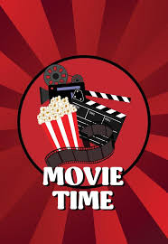

Rush Hoour

words that describe something or someone. [count] Reporters called the scene “a disaster area,” and I think that was an accurate
Inception
words that describe something or someone. [count] Reporters called the scene “a disaster area,” and I think that was an accurate
Gone with the Wind.
words that describe something or someone. [count] Reporters called the scene “a disaster area,” and I think that was an accurate